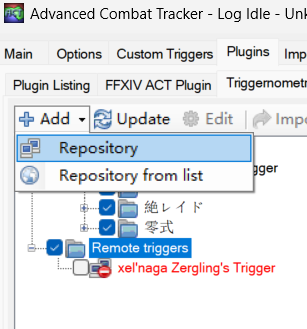
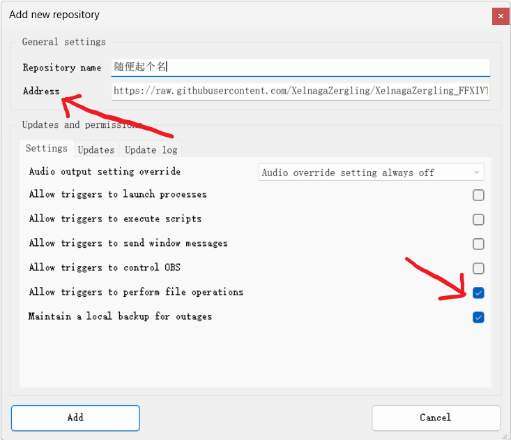
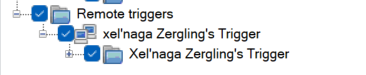

ACT Triggernomety插件 自用触发器合集 说明 使用方法
注意：此文章写于2023年9月22日02点22分，内容可能过时。
这是我的FF14触发器合集。包含了我从玩FF14开始写过的所有触发器。
如何使用？
1.选择远程触发器，然后点击左上角添加，添加仓库

2.地址写下面的地址。名字随便起。最后勾选允许触发器操作文件。

3.点击确定，导入完毕。建议将触发器复制到本地使用，删除远程触发器。
